Ranking and Rating: Markov chains
Ch. 6 of Langville-Meyer’s textbook is dedicated to Markov chains in sport prediction
We learn a new key concept of Data Science
Notation
A Stochastic Matrix S
describes the probab. of a transition of some sort between places or states etc.
\(s_{ij} = Pr[\textrm{the system goes from i to j}]\)
As a result:
each \(s_{ij}\) is \(\leq1\)
each row sums to 1.
Notation of the chapter
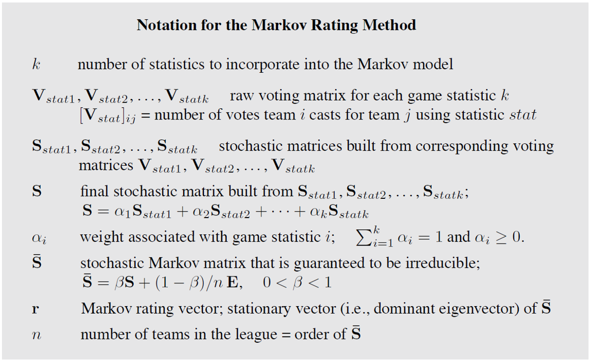The Markov method
The fairwheather fan
switches their allegiance to the winning team of the moment.
If they support \(i\), what is the prob. that they switch to \(j\)?
How did we obtain this matrix?
Input: the win-loss data:
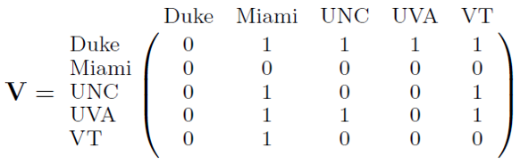Rows normalised to 1:
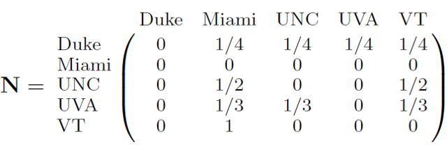The Miami row sums to 0: not stochastic!
As with PageRank, substitue all \(\mathbf{0}^T\) rows with \(\frac{1}{n}\mathbf{1}^T\)
Now the fair-wheather fan takes a long, random walk along this Markov graph:
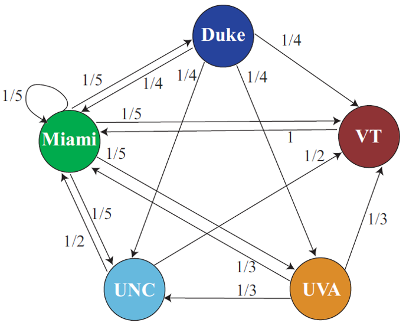We record the number of times the random walker passess each vertex.
After a while, the proportion of visits to each node stabiles.
The vector \(\mathbf{r}\) with the frequencies is a stationary vector
\(\mathbf{r}\) corresponds to the dominant e-vector of the Markov-chain matrix!

How to create the Base Matrix
With Points differential
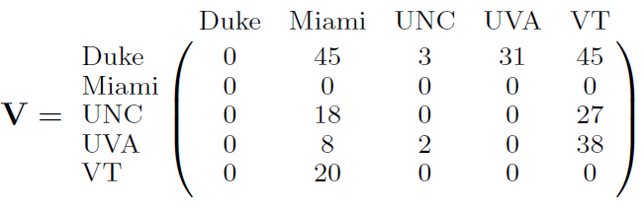Winners/losers with points
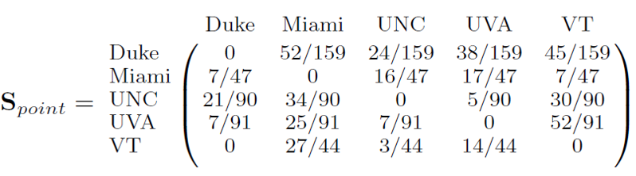With yardage
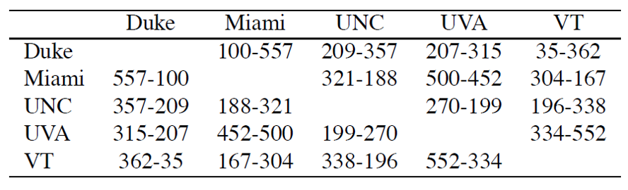With turnover
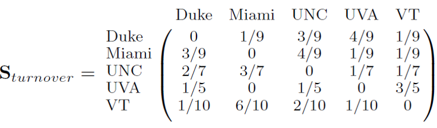With possession
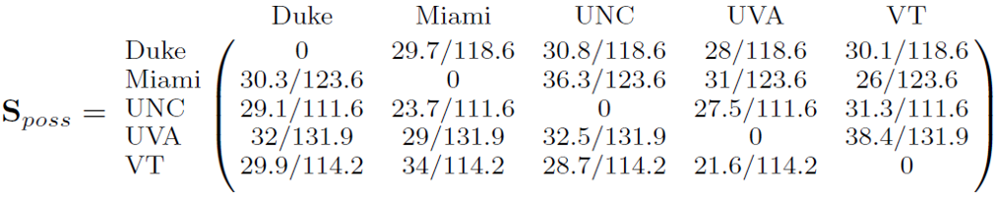With linear combinations of features
\[\mathbf{S} = \alpha_1 \mathbf{S_{points}} + \alpha_2 \mathbf{S_{yard.}} + \alpha_3 \mathbf{S_{turn.}} + \alpha_4 \mathbf{S_{poss.}}\]
If weights are all non-negative and sum to 1, also \(\mathbf{S}\) will be stocastic.
Weights are assigned by experts or…
could be learned by an outer ML system running on historical data.
By default, let’s set all 4 \(\alpha\) weights to \(\frac{1}{4}\):
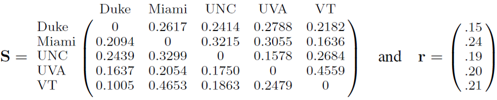(rating compression starts manifesting)
Issues at the extremes
Handling undefeated teams
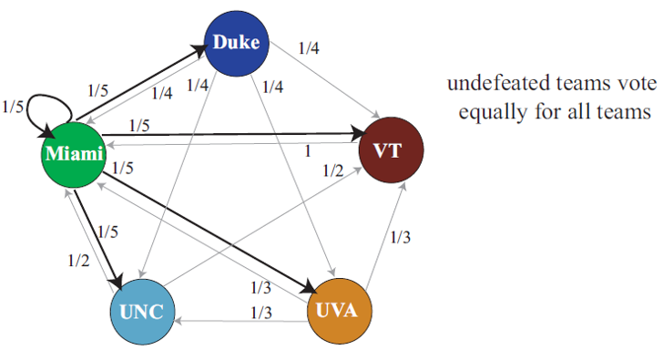A random walker soon get stuck with Miami!
Assign a probability to escape:
\(\mathbf{\overline{S}} = \beta \mathbf{S} + \frac{(1-\beta)}{n} \mathbf{1}\) (1 everywhere)
PageRank: \(\beta = 0.85\)
NFL: \(\beta = 0.6\)
NCAA: \(\beta = 0.5\)
A better example: modeling the ‘Back’ button of the browser when we visit a dead-end page.
Summary of the method
The algorithm

Comparison with Massey’s
The point-differential M. chain:
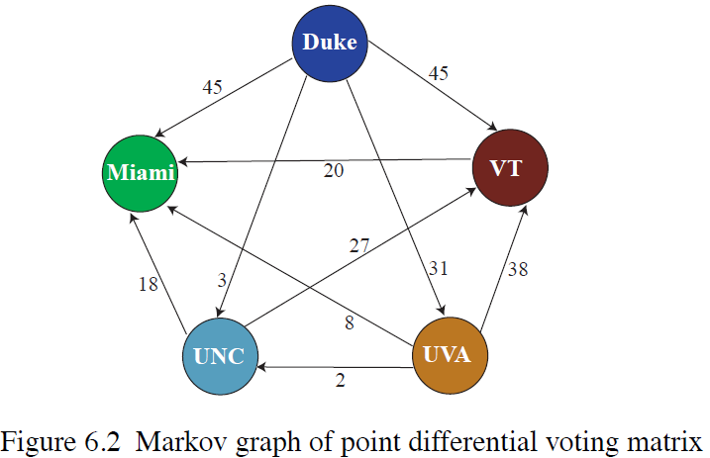Massey graph for the same season
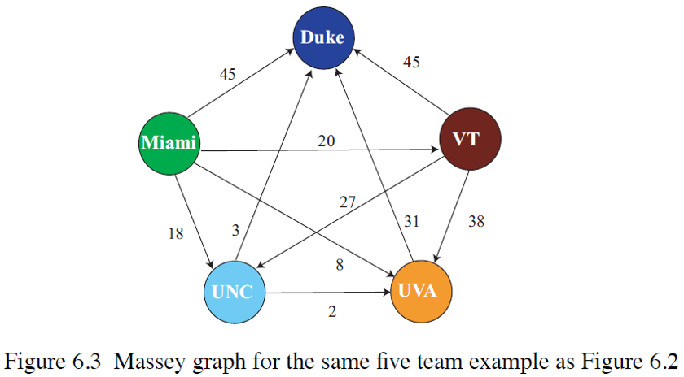Further applications
Let’s hire fairwheater fans to do random walks:
by accumulation and stabilisation of the frequencies we will find out the dominant e-vector of \(\mathbf{S}\) without engaging in matrix operations.
Trivia: The Maths genalogy project:
Markov begot Shanin, Shanin begot Gelfond, and Gelfond begot me.
Coda: random walks for Machine vision
Image segmentation

Find objects inside a picture
Could random walker discover the perimeter of objects by walking around them?
The Data
A photos (bitmap) can be seen as
a m x n matrix, each value, the pixel being an RGB encoding over [0..255]
a m x n x 3 tensor where each layer, sometimes called channel containe [0..255] intensitites of the respective color
a network of pixel nodes joint in a mesh: each node is connected rectilinearly with 2 (corner), 3 (border) or 4 (inner) neighbour pixels.
Mapping
RGB values can be normalised to [0..1] by mapping the three values into intensities, i.e, the lenght of the vector over \(N^3\)
total black: \([0][0][0] \rightarrow 0\)
total white: \([255][255][255] \rightarrow 1\)
total red: \([255][0][0]\rightarrow ?\)
The normalised norm:
\(|p_{ij}|_3 = \frac{1}{\sqrt{3}} \sqrt{\frac{p^{red}_{ij}+p^{green}_{ij}+p^{blue}_{ij}}{255}}\)
the norm in action
So, for a total-red pixel:
\(|p_{ij}|_3 = \frac{1}{\sqrt{3}} \sqrt{\frac{255+0+0}{255}} = \frac{1}{\sqrt{3}} \approx \frac{1}{1.732}\approx 0.57735.\)
For a total-brown pixel:
\(|p_{ij}|_3 = \frac{1}{\sqrt{3}} \sqrt{\frac{255+0+255}{255}} = \frac{1}{\sqrt{3}}\sqrt{2} \approx \frac{1.4142}{1.732}\approx 0.8165.\)
The random walk model
Let random walkers to prefer to remain on the same likely surface/object, i.e., not cross-through density slopes
make the prob. to move to a neighbour pixel inverse-proportional to the difference in intensity between the origin and destination pixels.
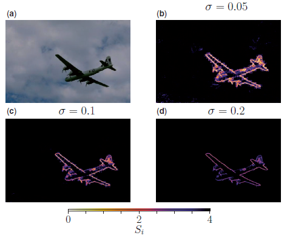